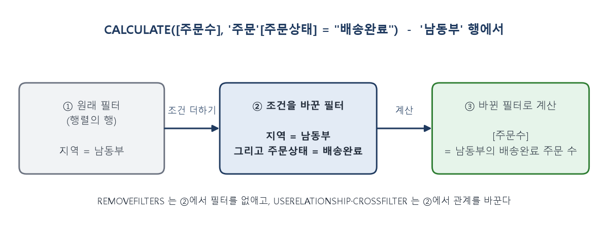
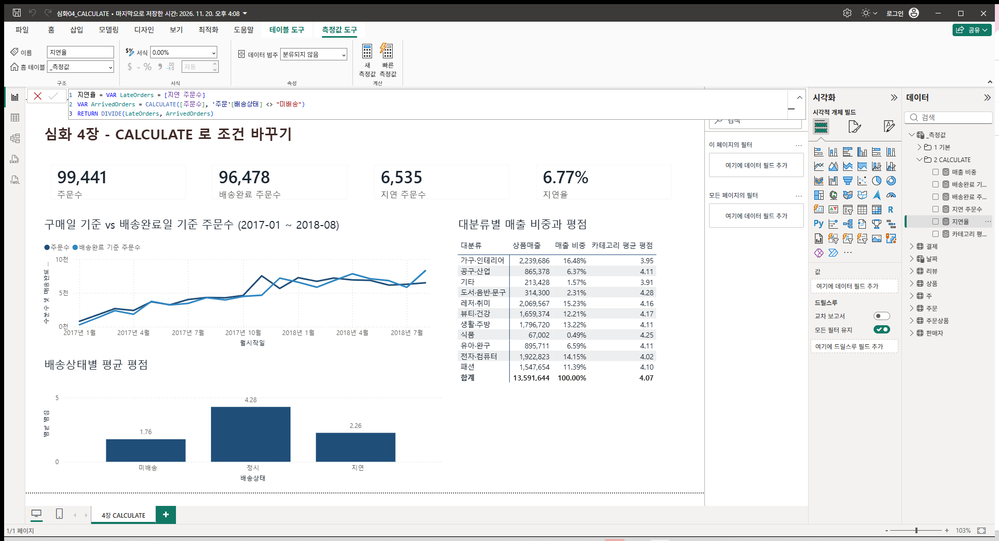
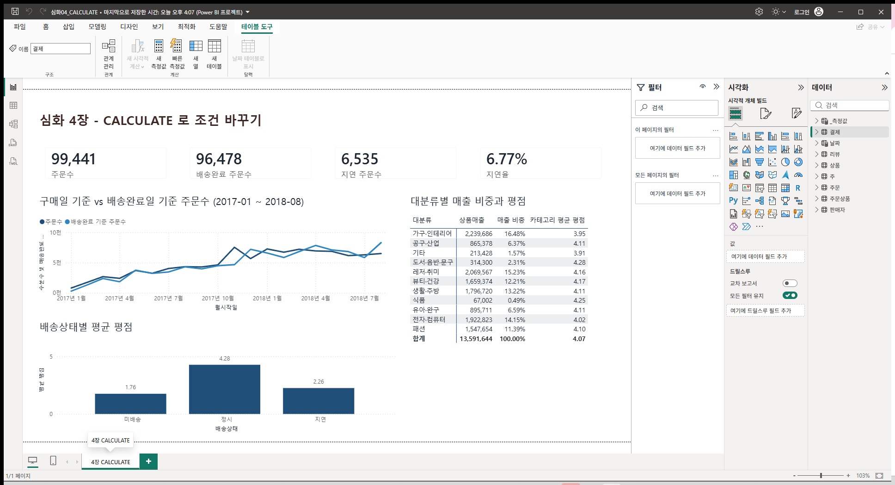

4장. DAX 심화 ① CALCULATE - 조건을 바꿔서 계산하기
학습 목표
- CALCULATE 로 측정값에 조건(필터)을 더하거나 없앤다.
- REMOVEFILTERS 로 전체 대비 비중을 계산한다.
- VAR / RETURN 으로 긴 식을 나눠 쓴다.
- CROSSFILTER, USERELATIONSHIP 으로 그 측정값에서만 관계를 바꾼다.
4-1. CALCULATE 는 무엇을 하는가
기초 과정에서 배운 필터 컨텍스트를 떠올리자. 측정값은 놓인 자리의 조건(필터)으로 계산된다. 행렬의 "남동부" 행에서 [주문수] 는 "지역 = 남동부" 인 주문만 센다.
CALCULATE 는 이 조건을 바꾼 다음 계산하는 함수다.
CALCULATE(계산할 식, 조건1, 조건2, …)

| 조건의 모양 | 하는 일 | 예 |
|---|---|---|
'테이블'[열] = 값 |
그 열의 필터를 이 값으로 바꾼다 (다른 열의 필터는 그대로) | '주문'[주문상태] = "배송완료" |
REMOVEFILTERS('테이블') |
그 테이블에 걸린 필터를 없앤다 | 전체 대비 비중 |
USERELATIONSHIP(…) |
비활성 관계를 켠다 | 배송완료일 기준 |
CROSSFILTER(…) |
관계의 필터 방향을 바꾼다 | 카테고리별 평점 |
3장 파일을 열고 _측정값 테이블에 측정값을 차례로 만든다. 서식은 측정값마다 리본 측정값 도구 탭에서 정한다.
4-2. 조건 더하기 - 배송완료 주문수, 지연 주문수
배송완료 주문수 = CALCULATE([주문수], '주문'[주문상태] = "배송완료")
지연 주문수 = CALCULATE([주문수], '주문'[배송상태] = "지연")
카드로 확인하면 각각 96,478, 6,535 다. 행렬에 지역을 넣으면 지역마다 "그 지역 + 배송완료" 인 주문 수가 나온다. 원래 조건(지역)은 그대로 두고, 조건(주문상태)을 하나 더한 것이다.
이미 같은 열에 조건이 있으면? 주문상태 슬라이서에서 "취소" 를 골라도
배송완료 주문수는 배송완료 주문을 센다. CALCULATE 의 조건이 같은 열의 바깥 조건을 덮어쓰기 때문이다. 바깥 조건을 지키면서 더하고 싶으면KEEPFILTERS('주문'[주문상태] = "배송완료")처럼 감싼다.
4-3. VAR 로 나눠 쓰기 - 지연율
지연율 = 지연 주문수 ÷ 배송이 끝난 주문수. 아직 도착하지 않은 주문은 늦었는지 알 수 없으니 분모에서 뺀다.
지연율 =
VAR LateOrders = [지연 주문수]
VAR ArrivedOrders = CALCULATE([주문수], '주문'[배송상태] <> "미배송")
RETURN DIVIDE(LateOrders, ArrivedOrders)
VAR 이름 = 식으로 중간 결과에 이름을 붙이고,RETURN뒤에 최종 결과를 쓴다.- 식이 읽기 쉬워지고, 같은 값을 여러 번 쓸 때 한 번만 계산한다.
- 수식 입력줄에서 Shift+Enter 로 줄을 바꾼다. (Enter 는 확정)
- 변수 이름은 영문자·숫자·_ 만 쓸 수 있다.
VAR 지연 = …처럼 한글로 쓰면 오류가 난다.
서식을 백분율(소수 2자리)로 바꾸면 6.77% 다.

4-4. 조건 없애기 - 매출 비중
대분류별 "전체 매출 중 몇 %" 를 구해 보자. 분모는 대분류 필터가 없는 전체 매출이어야 한다.
매출 비중 = DIVIDE([상품매출], CALCULATE([상품매출], REMOVEFILTERS('상품')))
- 분자
[상품매출]: 지금 행의 대분류 매출 (예: 가구·인테리어 2,239,686) - 분모 : 상품 테이블의 필터를 없앤 매출 = 전체 13,591,644
- 결과 16.48%
연도 슬라이서로 2018년을 고르면? REMOVEFILTERS('상품') 은 상품 테이블의 필터만 없앤다. 날짜 필터는 남아 있으므로 "2018년 전체 중 이 대분류의 비중" 이 된다. 무엇을 없애고 무엇을 남길지 고르는 것이 CALCULATE 의 핵심이다.
4-5. 관계 방향 바꾸기 - 카테고리 평균 평점
3장에서 본 문제: 리뷰는 주문에 붙어 있고, 상품의 필터는 주문상품까지만 흐른다. 그래서 대분류별 [평균 평점] 은 모든 행이 전체 평균 4.07 로 같다.
카테고리 평균 평점 = CALCULATE([평균 평점], CROSSFILTER('주문상품'[주문ID], '주문'[주문ID], Both))
CROSSFILTER(다 쪽 열, 일 쪽 열, Both) 는 이 측정값을 계산하는 동안만 주문상품 ↔ 주문 관계를 양방향으로 바꾼다. 필터가 상품 → 주문상품 → 주문 → 리뷰 로 흘러, 그 대분류 상품이 들어 있는 주문의 리뷰만 평균한다.
| 대분류 | 평균 평점 (그냥) | 카테고리 평균 평점 |
|---|---|---|
| 가구·인테리어 | 4.07 | 3.95 |
| 도서·음반·문구 | 4.07 | 4.28 |
4-6. 비활성 관계 켜기 - 배송완료일 기준 주문수
3장에서 만든 점선 관계(주문[배송완료일] → 날짜[Date])를 쓴다.
배송완료 기준 주문수 = CALCULATE([주문수], USERELATIONSHIP('주문'[배송완료일], '날짜'[Date]))
꺾은선형 차트에 X축 날짜[월시작일], Y축 주문수 와 배송완료 기준 주문수 를 함께 넣으면, 배송완료 기준 선이 구매일 기준 선보다 조금 오른쪽(늦게) 에 그려진다. 주문하고 평균 12일 뒤에 도착하기 때문이다.

4장 완성 화면의 꺾은선형 차트에는 시각적 개체 필터로 기간(2017-01 ~ 2018-08)을 걸었다. 이유는 5장에서 설명한다.
정리
CALCULATE(식, 조건…)= 조건을 바꾼 뒤 식을 계산한다. 조건은 같은 열의 바깥 필터를 덮어쓴다.REMOVEFILTERS(테이블)로 필터를 없애 전체 대비 비중을 구한다.VAR … RETURN으로 식을 나눠 쓴다. 변수 이름은 영문.CROSSFILTER(…, Both),USERELATIONSHIP(…)은 그 측정값 안에서만 관계를 바꾼다. 모델은 그대로 둔다.
확인 문제
취소 주문수 = CALCULATE([주문수], '주문'[주문상태] = "취소")를 만들어 보자. 전체 값은 얼마인가?- 행렬 행에 주[지역]을 넣고
[매출 비중]을 넣으면 모든 행이 100% 가 된다. 왜일까? 지역별 비중을 구하려면 식을 어떻게 고쳐야 할까? - 대분류 중
카테고리 평균 평점이 가장 낮은 것과 가장 높은 것은? 배송완료 기준 주문수의 전체 합계는[주문수](99,441) 보다 적다. 얼마이고, 왜 적을까?